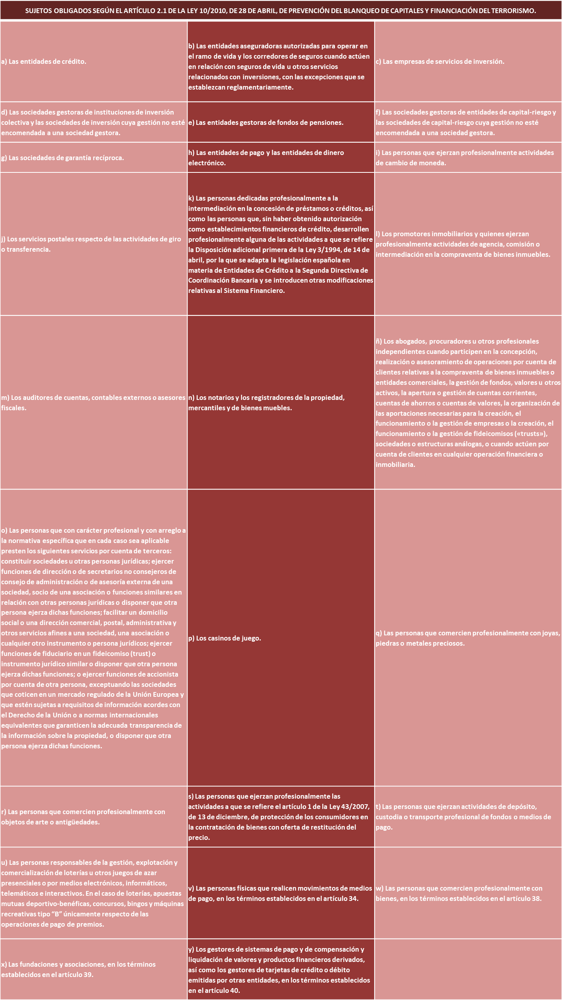

Inicio / Servicios / Prevención del blanqueo
ServicioPrevención del blanqueo de capitales
Servicio de adaptación a la Ley 10/2010 de Prevención del Blanqueo de Capitales y de la Financiación del Terrorismo, en dos modalidades según el tamaño del sujeto obligado.
Según cuántos sois y cuánto facturáis
Hemos desarrollado dos modalidades de asesoramiento para adecuar las actuaciones a lo que debe cumplir cada tipo de sujeto obligado no financiero.
Menos de 10 empleados y menos de 2 M€ de facturación
- Análisis previo de la situación del cliente.
- Nombramiento de la persona representante ante el SEPBLAC.
- Confección de la política interna de prevención del blanqueo.
- Auditoría anual.
- Respuesta ante requerimientos e inspecciones del SEPBLAC.
- Asesoramiento permanente en prevención del blanqueo y financiación del terrorismo.
Más de 10 empleados y más de 2 M€ de facturación
- Todo lo del servicio Diligence.
- Creación del Órgano de Control Interno (OCIC), en caso necesario.
- Confección del Manual de Procedimientos.
- Elaboración del Plan Anual de Formación.
- Examen anual por experto externo.
- Asesoramiento jurídico, defensa jurídica y seguro de responsabilidad civil.
Un buen motivo para estar bien asesorado. El incumplimiento de la Ley de Prevención del Blanqueo de Capitales y de la Financiación del Terrorismo comporta sanciones que pueden oscilar entre los 60.000 € y los 1.500.000 €, o cuantías mayores en función de la infracción.
¿Te aplica a ti?
La ley enumera quién está sujeto a estas obligaciones. También quedan sujetas las personas o entidades no residentes que, a través de sucursales, agentes o prestando servicios sin establecimiento permanente, desarrollen en España actividades de la misma naturaleza.
Si no tienes claro si entras en la lista, dínoslo y lo miramos: es la primera pregunta que hay que responder.

¿Eres sujeto obligado y aún no tienes representante ante el SEPBLAC?
Empezamos por el análisis previo y te decimos qué modalidad te corresponde.